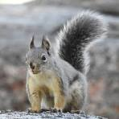

Una especie única de roedor insular que se extinguió debido al impacto humano y la introducción de especies invasoras.
Descripción de la Ardilla de San Pedro Mártir

Extinto: Siglo XX.
Ubicación: Isla San Pedro Mártir, México.
Causa: Introducción de gatos y pérdida de hábitat.
La ardilla de San Pedro Mártir era un roedor endémico de la Isla San Pedro Mártir en México. Esta especie única vivió en un entorno aislado, lo que le dio ciertas características particulares.
Al ser una especie insular, la ardilla de San Pedro Mártir no estaba preparada para enfrentar las amenazas que llegaron con la intervención humana, como la introducción de gatos y la destrucción de su hábitat natural. Esta falta de adaptación a nuevas amenazas fue un factor determinante en su extinción.
Hábitat de la Ardilla de San Pedro Mártir
La ardilla habitaba en las zonas rocosas y de vegetación dispersa de la isla San Pedro Mártir, ubicada en el Golfo de California. El ecosistema de esta isla era muy específico y aislado, lo que hacía que la ardilla tuviera pocas amenazas naturales.
Sin embargo, la introducción de gatos y otras especies invasoras cambió por completo el equilibrio ecológico, llevando a la extinción de este roedor. La pérdida de su hábitat debido a la intervención humana también aceleró su desaparición.
Impacto Humano en la Extinción
La principal causa de la extinción de la ardilla de San Pedro Mártir fue la introducción de gatos en la isla, que se alimentaron de los pequeños roedores. Además, la urbanización y el turismo en la isla redujeron significativamente el hábitat adecuado para estas ardillas.
Este caso es un ejemplo claro de cómo las especies invasoras, introducidas sin intención, pueden tener efectos devastadores sobre los ecosistemas locales y las especies endémicas, muchas veces sin que los humanos se den cuenta hasta que es demasiado tarde.